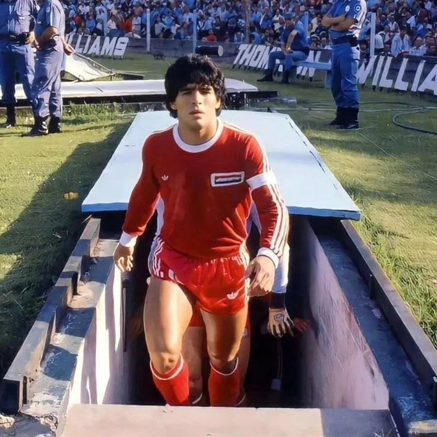
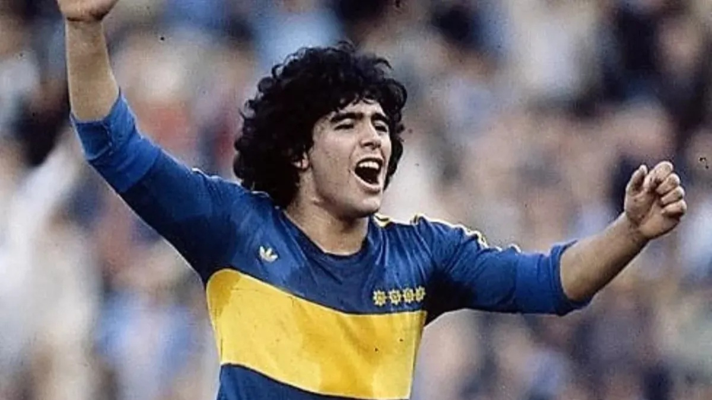
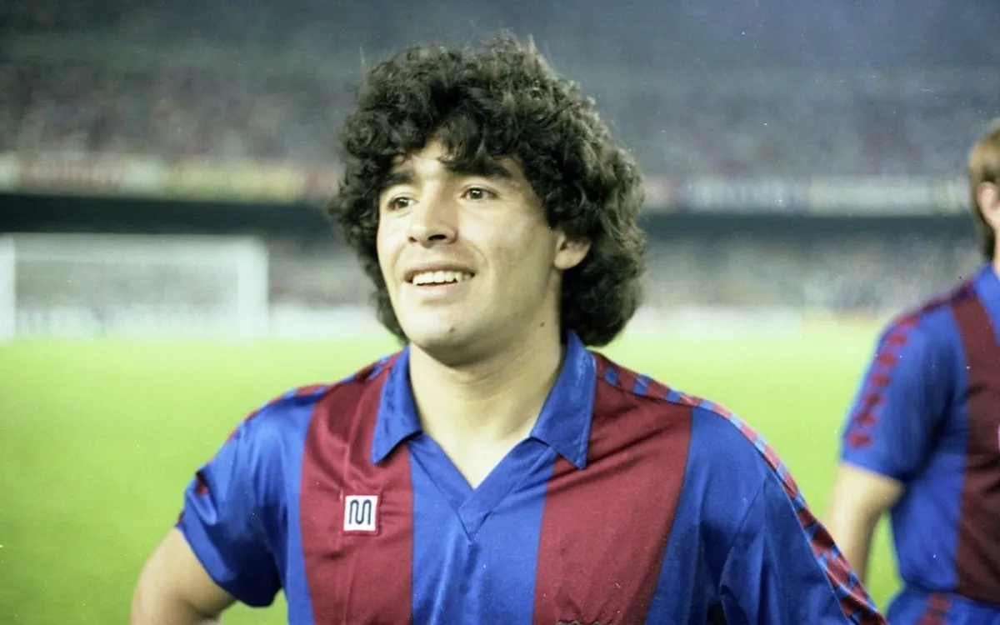
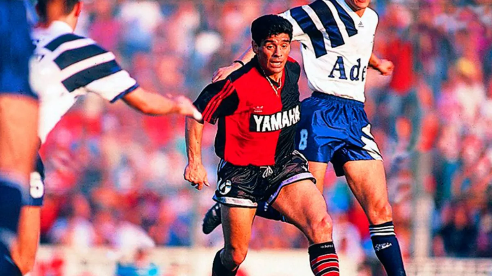
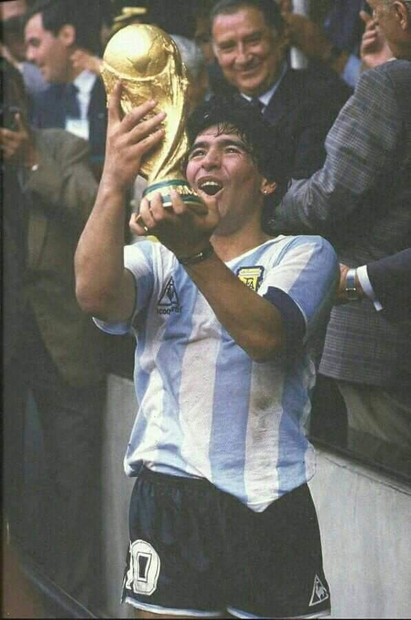

Clubes

Argentinos Juniors (1976–1981)
Debut profesional y primeros pasos como estrella.

Boca Juniors (1981–1982, 1995–1997)
Consagración en Argentina y regreso emotivo al final de su carrera.

FC Barcelona (1982–1984)
Primer gran salto a Europa, con títulos y desafíos.

Napoli (1984–1991)
La etapa más gloriosa: dos Scudetti, Copa UEFA y amor eterno de la ciudad.

Sevilla (1992–1993)
Breve paso por España tras su salida de Italia.

Newell’s Old Boys (1993)
Regreso a Argentina con un paso corto pero recordado.

Selección Argentina (1977–1994)
Campeón Mundial 1986, ícono eterno de la Albiceleste.